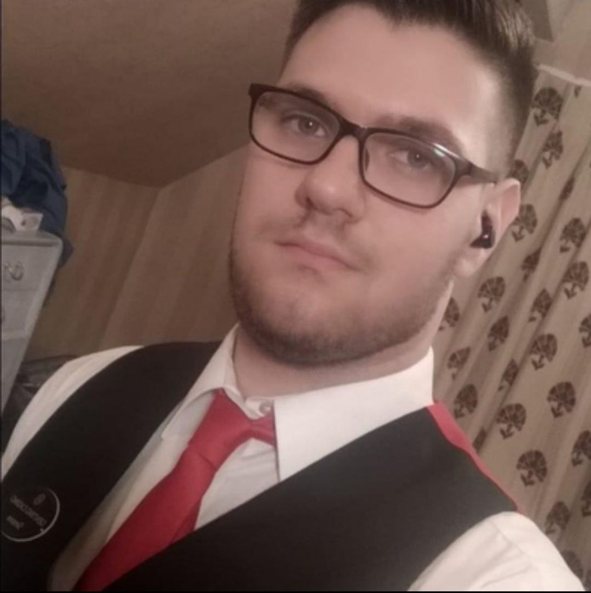

Sono nato a Palermo il 3 Febbraio del 1999, ma mi sono
cresciuto in un paese vicino chiamato Lercara Friddi. Sono
rimasto in questo paese fino al primo anno di liceo, poi mi sono
trasferito nuovamente a Palermo dove ho terminato il liceo e
frequentato il primo anno dell'ateneo di Scienze Motorie e Sportive.
Mi sono presto reso conto che non faceva per me e mi sono iscritto ad
un corso per diventare Cropier nei Casinò.
Il mio primo lavoro è stato a Birmingham: ho lavorato per circa
4 mesi, poi è arrivato il covid e sono rimasto lì in lockdown fino ad
agosto del 2020.
Quando in Inghilterra i casinò hanno riaperto, il mio ha dovuto fare
un taglio di personale, e questo ha incluso anche me, infatti sono
tornato in Italia per un'annetto.
Dopo questa esperienza ho lavorato a Malta, sempre in un
Casinò, per circa 6 mesi, e in fine mi sono trasferito a Londra, dove
sono rimasto fino a poco prima di iscrivermi a questo
Mi piace leggere e un po' tutto ciò che stimola la creatività. Guardo film, anime, serie tv, e gioco ai videogiochi.
Sono sempre stato un ragazzo abbastanza tranquillo e riservato. Mi
piace parlare e conoscere nuove persone, però allo stesso tempo ogni
tanto ho bisogno di "staccare" e rimanere un po' a casa tranquillo.
Però ovviamente mi piace uscire con amici e divertirmi.

Le mie competenze
- Conoscenza di quasi tutti i giochi all'interno dei Casinò, e capacità di "ealerarli"
- Capacità di lavorare sotto pressione
- Ottimo customer service
- Ottima conoscenza della lingua inglese
Competenze da acquisire
- HTML e CSS
- JavaScript
- React